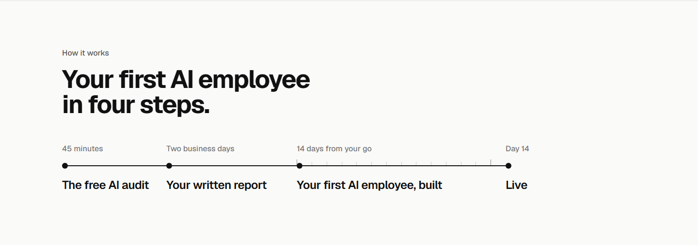

/pilot section 3: the label above the heading, three ways (31 Oct 2026)
Will: "change the name of section 3 from How it works to something that is more fitting". Under each option, the page's six labels in order, so the set is judged together. 1440 left, 375 right.
How it worksToday: doubles the heading's how, and says nothing the heading does not
AI Audit · What you get back · How it works · What it fixes · What comes next · Questions

The timeline1, recommended: names the thing on the page, the way Questions does
AI Audit · What you get back · The timeline · What it fixes · What comes next · Questions
Start to finish2: the span, in the owner's words
AI Audit · What you get back · Start to finish · What it fixes · What comes next · Questions
When it happens3: what the four stops add to the page, the dates
AI Audit · What you get back · When it happens · What it fixes · What comes next · Questions